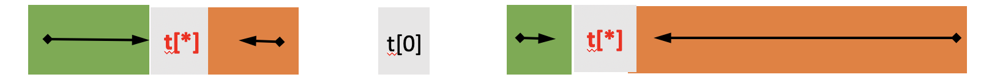
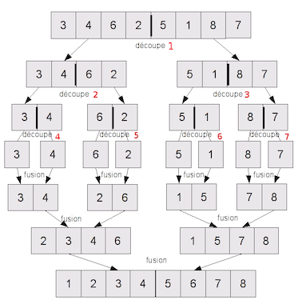

Trier
Contenu
4. Trier¶
Mis à jour : Apr 13, 2022, lecture : 10 minutes minimum, PhL.
4.1. Introduction¶
4.1.1. Vocabulaire¶
Trier : classer, ordonner des valeurs, des objets
trier des copies par notes
trier des copies par ordre alphabétique des candidats
trier des livres dans une bibliothèque
trier des containers sur un port
Trier : To sort en anglais
Sorting algorithms
.sort(): méthode deslistpython
Pourquoi ?
recherche efficace : \(\cal{O}(n) \to \cal{O}(\log(n))\)
applications multiples : binpack, correction orthographique, …
4.1.2. Complexités¶
Tris en place
\(\cal{O}(1)\) : complexité en espace constante vs. nombre de valeurs à trier
exemple : trier une main de cartes (tri par insertions)
Complexités en temps
tris lents \(\to\) tris rapides \(\to\) tris linéaires
\(\cal{O}(n^2) \to \cal{O}(n\log(n)) \to \cal{O}(n)\)
pires cas vs. meilleurs cas
\(\cal{O}(n\log(n))\) : complexité optimale des tris par comparaisons
Trier \(\nRightarrow\) comparer !
Tris par comparaisons vs. tris par dénombrements
complexité en temps \(\cal{O}(n)\) : très très efficaces
4.1.3. Principaux algorithmes de tri¶
Tris par comparaisons : algorithmes lents
pire cas : \(\cal{O}(n^2)\)
tri par sélections, par insertions, permutations, “à bulles”, …
Tris par comparaisons : algorithmes rapides
pire cas ou cas moyen : \(\cal{O}(n\log(n))\)
tri fusion, tri (dit) rapide (quicksort)
Tris (dits) linéaires : applicabilité spécifique
exemple de restrictions : valeurs à trier = un ensemble fini d’entiers (ou une bijection vers un tel ensemble)
complexité en temps et en espace : \(\cal{O}(n)\)
tri par dénombrements, tri par base (ou tri radix)
Rmq. pour la suite
Sans perte de généralités, les valeurs à trier sont supposées être \(n\) entiers stockés dans un tableau 1D (une liste python).
# si python<3.9
#from typing import List
4.2. Tri insertion¶
Un exemple de tri par comparaisons, en place et de complexité au pire quadratique.
4.2.1. Principe¶
Analogue au tri d’une main de cartes
je parcours la partie triée de la main de cartes
et j’insère à sa bonne place la carte à classer
insérer une carte \(\Rightarrow\) en déplacer d’autres
4.2.2. (\(\star\)) Invariant¶
(P) : Avant l’itération \(i\), le sous-tableau t[0, \(i\)[ est trié.
Exercice
Expliciter l’initialisation de (P).
Que signifie la terminaison de (P) ?
(\(\star\)) Prouver (P).
4.2.3. Algorithme¶
def triInsertion(t : list[int], n: int) -> list[int]:
'''tri insertion : version itérative
entrées. t : tableau d entiers de longueur n = len(t)
sortie. t est trié par ordre croissant'''
for i in range(1, len(t)): # pour chaque valeur en partant de la gauche
val = t[i]
j = i
while j > 0 and val < t[j-1]: # en remontant vers la gauche (partie triée)
t[j] = t[j-1]
j = j-1
t[j] = val
# le return n'est pas obligatoire : on a trié t en place (procédure)
return t
# Premières applications
# un tableaux de valeurs aleatoires
from random import randint
dim = 5
a = [randint(0,50) for i in range(dim)]
print(a)
print("Trions !")
b = triInsertion(a, len(a))
print(b)
#print("attention : affecter un tab n'est pas creer un nouveau tab")
#print(a)
[44, 22, 5, 34, 39]
Trions !
[5, 22, 34, 39, 44]
4.2.4. Pire cas, meilleur cas¶
# pire et meilleur cas
def pirecasinsertion(n: int) -> list[int]:
a = [x for x in reversed(range(n))]
return a
def meilleurcasinsertion(n: int) -> list[int]:
a = [x for x in range(n)]
return a
pire = pirecasinsertion(dim)
print("pire cas")
print(pire)
pire = triInsertion(pire, dim)
print(pire)
print("meilleur cas")
best = meilleurcasinsertion(dim)
print(best)
best = triInsertion(best, dim)
print(best)
pire cas
[4, 3, 2, 1, 0]
[0, 1, 2, 3, 4]
meilleur cas
[0, 1, 2, 3, 4]
[0, 1, 2, 3, 4]
Exercices¶
Modifier
triInsertion()pour décompter le nombre de comparaisons. Vérifier que les cas extrêmes exhibés sont bien ceux-là. Expérimenter en mesurant aussi les temps d’exécution.(*) Ecrire une version récursive de
triInsertion()
Corrections¶
from random import randint
from numpy import log
import matplotlib.pyplot as plt
from matplotlib.backends.backend_pdf import PdfPages
valmax = 99
def triinsertion(t: list[int]) -> list[int]:
'''Même version sans le paramètre n'''
for i in range(1, len(t)):
v = t[i]
j = i
while j > 0 and v < t[j-1]:
t[j] = t[j-1]
j = j-1
t[j] = v
return t
def comptriinsertion(t: list[int]) -> list[int]:
""" version avec decompte du nb comparaisons"""
c = 0
for i in range(1, len(t)):
v = t[i]
j = i
c += 1 # au moins une (derniere) comparaison
while j > 0 and v < t[j-1]:
t[j] = t[j-1]
j = j-1
c += 1
t[j] = v
if j == 0:
c = c-1 # sauf si c'est j qui arrete la boucle
return t, c
# un tableau de valeurs aléatoires
def tabalea(n : int) -> list[int]:
a = [randint(0,valmax) for i in range(n)]
return a
def pirecasinsertion(n: int) -> list[int]:
a = [x for x in reversed(range(n))]
return a
def meilleurcasinsertion(n: int) -> list[int]:
a = [x for x in range(n)]
return a
def testcomp10():
n = 10
a = tabalea(n)
w = pirecasinsertion(n)
b = meilleurcasinsertion(n)
tabs = [b,w,a]
print("Trions !")
for t in tabs:
print(t)
res, c = comptriinsertion(t)
print(res)
print(c , "comparaisons pour n = ", n)
def testcomp():
#dims = (10, 50)
dims = (10, 50, 100, 200, 300, 500, 1000)
nbcompalea = []*len(dims)
nbcompbest = []*len(dims)
nbcompworst = []*len(dims)
for n in dims:
b = meilleurcasinsertion(n)
res, c = comptriinsertion(b)
nbcompbest.append(c)
print("Meilleur cas : au plus ", c , "comparaisons pour n = ", n)
w = pirecasinsertion(n)
res, c = comptriinsertion(w)
nbcompworst.append(c)
print("Pire cas : au moins ", c , "comparaisons pour n = ", n)
p = 10
print("Moyenne de ", p, "cas aleatoires :")
ctot = 0
for t in range(p):
a = tabalea(n)
res, c = comptriinsertion(a)
#print(res)
print(c , "comparaisons pour n = ", n)
ctot += c
cmoy = int(ctot/p)
nbcompalea.append(cmoy)
print("Conclusion : ", cmoy, "comparaisons en moyenne pour n = ", n, "(", p, "echantillons)")
print("---------")
return dims, nbcompbest, nbcompworst, nbcompalea
def plottestcomp():
'''Pour tracer cette analyse. A effectuer hors notebook.'''
# calculs
n, b, w, m = testcomp()
# traces
fig = plt.figure()
fig.suptitle("Complexites du tri insertion", fontweight='bold')
# echelle lineaire
#fig1 = fig.add_subplot(1,1,1)
plt.subplot(211)#2lignes, 1 col, fig1
plt.title("nombre de comparaisons (vs. n)")
plt.plot(n, b,'g-v', label="meilleur")
plt.plot(n, w, 'r-^', label="pire")
plt.plot(n, m, 'b-o', label="moyen")
plt.legend(loc=2) # legende en haut a gche
# echelles log
plt.subplot(212)
plt.title("ordre de grandeur des complexites (vs. n)")
#plt.semilogy()
plt.ylabel("log(comp)/log(n)")
plt.plot(n, log(b)/log(n), 'g-v', label="meilleur")
plt.plot(n, log(w)/log(n), 'r-^', label="pire")
plt.plot(n, log(m)/log(n), 'b-o', label="moyen")
plt.legend(loc=4)
# sortie ecran ou pdf
plt.show()
#pp = PdfPages('./plt-comp-triinsertion.pdf')
#pp.savefig()
#pp.close()
testcomp10()
Trions !
[0, 1, 2, 3, 4, 5, 6, 7, 8, 9]
[0, 1, 2, 3, 4, 5, 6, 7, 8, 9]
9 comparaisons pour n = 10
[9, 8, 7, 6, 5, 4, 3, 2, 1, 0]
[0, 1, 2, 3, 4, 5, 6, 7, 8, 9]
45 comparaisons pour n = 10
[92, 51, 82, 80, 87, 84, 87, 6, 5, 37]
[5, 6, 37, 51, 80, 82, 84, 87, 87, 92]
36 comparaisons pour n = 10
testcomp()
Meilleur cas : au plus 9 comparaisons pour n = 10
Pire cas : au moins 45 comparaisons pour n = 10
Moyenne de 10 cas aleatoires :
32 comparaisons pour n = 10
34 comparaisons pour n = 10
28 comparaisons pour n = 10
35 comparaisons pour n = 10
22 comparaisons pour n = 10
31 comparaisons pour n = 10
24 comparaisons pour n = 10
27 comparaisons pour n = 10
21 comparaisons pour n = 10
31 comparaisons pour n = 10
Conclusion : 28 comparaisons en moyenne pour n = 10 ( 10 echantillons)
---------
Meilleur cas : au plus 49 comparaisons pour n = 50
Pire cas : au moins 1225 comparaisons pour n = 50
Moyenne de 10 cas aleatoires :
596 comparaisons pour n = 50
645 comparaisons pour n = 50
641 comparaisons pour n = 50
683 comparaisons pour n = 50
564 comparaisons pour n = 50
701 comparaisons pour n = 50
746 comparaisons pour n = 50
692 comparaisons pour n = 50
629 comparaisons pour n = 50
631 comparaisons pour n = 50
Conclusion : 652 comparaisons en moyenne pour n = 50 ( 10 echantillons)
---------
Meilleur cas : au plus 99 comparaisons pour n = 100
Pire cas : au moins 4950 comparaisons pour n = 100
Moyenne de 10 cas aleatoires :
2645 comparaisons pour n = 100
2725 comparaisons pour n = 100
2735 comparaisons pour n = 100
2291 comparaisons pour n = 100
2797 comparaisons pour n = 100
2705 comparaisons pour n = 100
2275 comparaisons pour n = 100
2411 comparaisons pour n = 100
2724 comparaisons pour n = 100
2376 comparaisons pour n = 100
Conclusion : 2568 comparaisons en moyenne pour n = 100 ( 10 echantillons)
---------
Meilleur cas : au plus 199 comparaisons pour n = 200
Pire cas : au moins 19900 comparaisons pour n = 200
Moyenne de 10 cas aleatoires :
10286 comparaisons pour n = 200
10083 comparaisons pour n = 200
9405 comparaisons pour n = 200
10089 comparaisons pour n = 200
9747 comparaisons pour n = 200
10463 comparaisons pour n = 200
10367 comparaisons pour n = 200
10083 comparaisons pour n = 200
9872 comparaisons pour n = 200
10094 comparaisons pour n = 200
Conclusion : 10048 comparaisons en moyenne pour n = 200 ( 10 echantillons)
---------
Meilleur cas : au plus 299 comparaisons pour n = 300
Pire cas : au moins 44850 comparaisons pour n = 300
Moyenne de 10 cas aleatoires :
21865 comparaisons pour n = 300
22350 comparaisons pour n = 300
20861 comparaisons pour n = 300
22204 comparaisons pour n = 300
23187 comparaisons pour n = 300
23284 comparaisons pour n = 300
22433 comparaisons pour n = 300
24012 comparaisons pour n = 300
21991 comparaisons pour n = 300
22365 comparaisons pour n = 300
Conclusion : 22455 comparaisons en moyenne pour n = 300 ( 10 echantillons)
---------
Meilleur cas : au plus 499 comparaisons pour n = 500
Pire cas : au moins 124750 comparaisons pour n = 500
Moyenne de 10 cas aleatoires :
62983 comparaisons pour n = 500
62332 comparaisons pour n = 500
60664 comparaisons pour n = 500
63308 comparaisons pour n = 500
63703 comparaisons pour n = 500
61587
comparaisons pour n = 500
65332 comparaisons pour n = 500
63267 comparaisons pour n = 500
58953 comparaisons pour n = 500
61758 comparaisons pour n = 500
Conclusion : 62388 comparaisons en moyenne pour n = 500 ( 10 echantillons)
---------
Meilleur cas : au plus 999 comparaisons pour n = 1000
Pire cas : au moins 499500 comparaisons pour n = 1000
Moyenne de 10 cas aleatoires :
239259
comparaisons pour n = 1000
238624 comparaisons pour n = 1000
242647 comparaisons pour n = 1000
246961 comparaisons pour n = 1000
249912 comparaisons pour n = 1000
253579 comparaisons pour n = 1000
243168 comparaisons pour n = 1000
251583 comparaisons pour n = 1000
242393 comparaisons pour n = 1000
247015 comparaisons pour n = 1000
Conclusion : 245514 comparaisons en moyenne pour n = 1000 ( 10 echantillons)
---------
((10, 50, 100, 200, 300, 500, 1000),
[9, 49, 99, 199, 299, 499, 999],
[45, 1225, 4950, 19900, 44850, 124750, 499500],
[28, 652, 2568, 10048, 22455, 62388, 245514])
plottestcomp()
Meilleur cas : au plus 9 comparaisons pour n = 10
Pire cas : au moins 45 comparaisons pour n = 10
Moyenne de 10 cas aleatoires :
36 comparaisons pour n = 10
32 comparaisons pour n = 10
31 comparaisons pour n = 10
25 comparaisons pour n = 10
23 comparaisons pour n = 10
24 comparaisons pour n = 10
21 comparaisons pour n = 10
28 comparaisons pour n = 10
42 comparaisons pour n = 10
36 comparaisons pour n = 10
Conclusion : 29 comparaisons en moyenne pour n = 10 ( 10 echantillons)
---------
Meilleur cas : au plus 49 comparaisons pour n = 50
Pire cas : au moins 1225 comparaisons pour n = 50
Moyenne de 10 cas aleatoires :
639 comparaisons pour n = 50
741 comparaisons pour n = 50
633 comparaisons pour n = 50
534 comparaisons pour n = 50
788 comparaisons pour n = 50
716 comparaisons pour n = 50
552 comparaisons pour n = 50
571 comparaisons pour n = 50
630 comparaisons pour n = 50
627 comparaisons pour n = 50
Conclusion : 643 comparaisons en moyenne pour n = 50 ( 10 echantillons)
---------
Meilleur cas : au plus 99 comparaisons pour n = 100
Pire cas : au moins 4950 comparaisons pour n = 100
Moyenne de 10 cas aleatoires :
2663 comparaisons pour n = 100
2858 comparaisons pour n = 100
2600 comparaisons pour n = 100
2640 comparaisons pour n = 100
2644 comparaisons pour n = 100
2634 comparaisons pour n = 100
2779 comparaisons pour n = 100
2503 comparaisons pour n = 100
2720 comparaisons pour n = 100
2530 comparaisons pour n = 100
Conclusion : 2657 comparaisons en moyenne pour n = 100 ( 10 echantillons)
---------
Meilleur cas : au plus 199 comparaisons pour n = 200
Pire cas : au moins 19900 comparaisons pour n = 200
Moyenne de 10 cas aleatoires :
10027 comparaisons pour n = 200
9724 comparaisons pour n = 200
10088 comparaisons pour n = 200
9836 comparaisons pour n = 200
10042 comparaisons pour n = 200
10919 comparaisons pour n = 200
10031 comparaisons pour n = 200
11132 comparaisons pour n = 200
9361 comparaisons pour n = 200
10368 comparaisons pour n = 200
Conclusion : 10152 comparaisons en moyenne pour n = 200 ( 10 echantillons)
---------
Meilleur cas : au plus 299 comparaisons pour n = 300
Pire cas : au moins 44850 comparaisons pour n = 300
Moyenne de 10 cas aleatoires :
22224 comparaisons pour n = 300
20745 comparaisons pour n = 300
22164 comparaisons pour n = 300
22503 comparaisons pour n = 300
20559 comparaisons pour n = 300
22100 comparaisons pour n = 300
22151 comparaisons pour n = 300
20957 comparaisons pour n = 300
20825 comparaisons pour n = 300
22967 comparaisons pour n = 300
Conclusion : 21719 comparaisons en moyenne pour n = 300 ( 10 echantillons)
---------
Meilleur cas : au plus 499 comparaisons pour n = 500
Pire cas : au moins 124750 comparaisons pour n = 500
Moyenne de 10 cas aleatoires :
60162 comparaisons pour n = 500
60938 comparaisons pour n = 500
62672 comparaisons pour n = 500
60834 comparaisons pour n = 500
63935 comparaisons pour n = 500
65557 comparaisons pour n = 500
61584 comparaisons pour n = 500
62516 comparaisons pour n = 500
62907 comparaisons pour n = 500
61303 comparaisons pour n = 500
Conclusion : 62240 comparaisons en moyenne pour n = 500 ( 10 echantillons)
---------
Meilleur cas : au plus 999 comparaisons pour n = 1000
Pire cas : au moins 499500 comparaisons pour n = 1000
Moyenne de 10 cas aleatoires :
249422 comparaisons pour n = 1000
250638 comparaisons pour n = 1000
260546 comparaisons pour n = 1000
253429 comparaisons pour n = 1000
240988 comparaisons pour n = 1000
246026 comparaisons pour n = 1000
256014 comparaisons pour n = 1000
242578 comparaisons pour n = 1000
244870 comparaisons pour n = 1000
258595 comparaisons pour n = 1000
Conclusion : 250310 comparaisons en moyenne pour n = 1000 ( 10 echantillons)
---------
4.2.5. Vers l’analyse de la complexité¶
Le tri insertion se compose de deux boucles imbriquées : for puis while
Quel paramètre de la complexité en temps de ce tri ?
Quelle mesure de la complexité en temps de ce tri ?
Que penser de la boucle
whiledans le pire cas ?Que penser de la boucle
whiledans le meilleur cas ?Que penser de la boucle
fordans le pire et dans le meilleur cas ?En déduire une expression de la complexité :
dans le pire cas
dans le meilleur cas
En déduire la complexité asymptotique dans le pire cas.
4.3. Tri rapide (ou quicksort)¶
Un premier exemple de tri (par comparaisons) récursif très efficace en pratique
4.3.1. Principe¶
Ranger une valeur à sa place définitive
toutes celles à sa gauche sont plus petites
toutes celles à sa droite sont plus grandes
ces sous-tableaux gauche et droit ne sont pas (encore) triés
Dans la figure suivante, la valeur v est définitivement bien placée :

Cette propriété est un invariant du tri rapide.
4.3.2. Récursion¶
Hypothèse de départ :
on suppose une des valeurs du tableau correctement placée,
en
t[p]par exemple
le tableau initial
t[0..n[est partagé en 2 sous-tableaux :t_gauche[0.. p[ett_droit[p+1 .. n[
Récursion
on trie chacun de ces sous-tableaux en appliquant le même principe
Terminaison : un sous-tableau trié
le sous-tableau est de taille 1 :
réduit à 1 élément == pivot == bien placé
4.3.3. Principe de mise en oeuvre avec duplication du tableau t¶
Une première mise en oeuvre “à vocation pédagogique” s’appuie sur la duplication du tableau de valeurs à chaque étape de la récursion.
Etape 1 : placer correctement le pivot v
parcourir et comparer chaque élément
t[i]avecvsi
t[i] < v, laissert[i]à gauche devsinon déplacer
t[i]à droite dev
En pratique,
le choix du pivot est arbitraire :
t[0]par exemple dans la suite
les déplacement peuvent être réalisés avec 2 tableaux (par exemple) :
tableau source \(\to\) tableau destination
On remplit le tableau destination par chacun de ses 2 bouts
et on place
t[0]à la fin.
Etape 2 : récursion sur chacun des deux sous-tableaux gauche et droit
Le premier pivot (t[0] ici) est correctement placé.
La récursion sur chacun des deux sous-tableaux gauche et droit permet de placer correctement les 2 nouveaux pivots t[*].

t[*]peuvent à nouveau être “lest[0]” de chacun des sous-tableaux.
4.3.4. Mise en oeuvre en place¶
Le principe étant bien compris, on effectue un traitement équivalent en place, c-a-d. sans dupliquer le tableau de valeurs.
Rmq: Les valeurs entre [.] sont les numéros de ligne dans le code de partition qui suit.
Hélas les numéros de lignes n’apparaissent pas dans la version html ;
le def est en ligne 1,
le assert en ligne 10 …
et le return en ligne 23.
une fonction
partitionorganise le sous-tableaut[g..d[comme suit.[11]on choisitt[d-1]comme pivot (autre choix arbitraire)[21]à la fin de l’itération, il se retrouvera ent[m]l’indice
mva partitionner le tableau en 2 parties : à gauche, les valeurs inférieures ou égales au pivot, à droite, à partir dem+1, les valeurs strictement supérieures[13]pour cela, on parcourttdegversd-1(d-1exclus)[12]on initialisem = g: si le pivot est la plus petite valeur det[g,d[alors il doit finir ent[g][15:17]on permute chaque valeur rencontrée plus petite que le pivot avect[m], et[18]mest incrémenté car le nombre de valeurs inférieures au pivot vient d’être augmenté de 1mreste (pour l’instant) l’indice de la première valeur strictement supérieure au pivot :ainsi
mest l’indice qui sépare les 2 partitions gche (valeurs plus petites ou égales que le pivot) et droite (plus grandes) det
[20]et une fois arrivé end-1, on permutet[m]et le pivot :le pivot se retrouve en
t[m], ce qui conserve la partition “gauche-droite” et correspond à l’objectif
remarque : la fonction retourne la valeur de séparation
mremarque : ce traitement s’effectue en place : pas la peine de renvoyer le tableau
la récursion
trirapide0( )appelle (récursivement)partition()sur les 2 sous-tableaux délimités de façon exclusive parm(cadt[g,m[ett[m+1,d[), et ce tant que leur longueur est plus grande que 1 ; sinon terminaison
la fonction
trirapide()réalise l’appel principal sur le tableau complett[g,d[:soit l’appel pour
g==0etd==len(t)
def partition(t: list[int], g: int, d: int) -> int:
"""partitionne t[g,d[
invariant : avant la boucle i
si g<=k < m, t[k] <= pivot
si m+1<=k <= i-1, t[k] > pivot
**** choix arbitraire: t[d-1] = pivot.
Cad : t[g,m] <= pivot < t[m+1,d[ (*)
avec pivot = t[m]
et m+1 indice du premier > pivot"""
assert g < d-1 # t contient au moins 2 éléments
pivot = t[d-1]
m = g
for i in range(g, d-1): # d-1 non atteint
if t[i] <= pivot:
tmp = t[i] # permuter t[m] et t[i]
t[i] = t[m]
t[m] = tmp
m = m+1 # m attend le prochain <= pivot
# placer pivot a sa place definitive
t[d-1] = t[m]
t[m] = pivot
#print("partition :", t[g:d])
return m
def trirapide0(t: list[int], g: int, d: int) -> None:
'''partitionne t[g,d[
et appels récursifs sur t[g,m[ et t[m+1,d['''
if d - g > 1: #il reste au moins 2 elmnts ds cette sous-partie de t
m = partition(t, g, d)
trirapide0(t, g, m-1)
trirapide0(t, m+1, d)
def trirapide(t: list[int], n: int) -> None:
'''tri rapide de t[0, len(t)['''
trirapide0(t, 0, len(t))
#t = tabalea(10)
t = [15,4,2,8,17,23,0,1]
print("avant :", t)
trirapide(t, len(t))
print("après :", t)
avant : [15, 4, 2, 8, 17, 23, 0, 1]
après : [0, 1, 2, 4, 8, 15, 17, 23]
4.3.5. Exercices¶
Ecrire une version (
partition2) plus simple avec duplication du tableauEcrire une version qui affiche les évolutions successives de
taprès chaque pivot
4.3.6. Corrections¶
def partition2(t, n, g, d):
'''Quicksort avec duplication tableaux
partitionne t[g, d[ autour du pivot (ici l élément de gauche t[g])
retourne la position finale du pivot'''
assert g < d
# on définit t_cible et on place les indices à ses 2 bouts
i = g
j = d-1
# choix arbitraire du pivot
pivot = t[g]
# on y va
for k in range(g+1, d):
if t[k] <= pivot:
t_cible[i] = t[k] # on remplit t_cible par la gauche
i = i + 1
else:
t_cible[j] = t[k] # on remplit t_cible par la droite
j = j - 1
# on peut placer le pivot à la place qui reste
assert i == j
m = i
t_cible[m] = pivot
# on met à jour t[g,d[ à l aide de t_cible
t[g:d] = [t_cible[i] for i in range(g,d)]
print("partition [g, d[:m -> [", g, ',' , d,"[:", m, t_cible[g:d], t[g:d])
return m
def triRapideRec2(t, g, d):
if d - g > 1: #il reste au moins 2 elmnts ds cette sous-partie de t
m = partition2(t, len(t), g, d)
triRapideRec2(t, g, m) # m est exclu
triRapideRec2(t, m+1, d)
def trirapide2(t):
global t_cible # bien noter le global !!
t_cible = [0 for i in range(len(t))]
print("dem :", t_cible, t)
triRapideRec2(t, 0, len(t))
t = tabalea(7)
print("avant :", t)
trirapide2(t)
print("après :", t)
avant : [7, 85, 55, 19, 45, 18, 26]
dem : [0, 0, 0, 0, 0, 0, 0] [7, 85, 55, 19, 45, 18, 26]
partition [g, d[:m -> [ 0 , 7 [: 0 [7, 26, 18, 45, 19, 55, 85] [7, 26, 18, 45, 19, 55, 85]
partition [g, d[:m -> [ 1 , 7 [: 3 [18, 19, 26, 85, 55, 45] [18, 19, 26, 85, 55, 45]
partition [g, d[:m -> [ 1 , 3 [: 1 [18, 19] [18, 19]
partition [g, d[:m -> [ 4 , 7 [: 6 [55, 45, 85] [55, 45, 85]
partition [g, d[:m -> [ 4 , 6 [: 5 [45, 55] [45, 55]
après : [7, 18, 19, 26, 45, 55, 85]
4.3.7. Performances, pire cas, meilleur cas¶
S’inspirer de la démarche sur triInsertion( ) avec les exercices suivants. Bon travail !
Exercices¶
Ecrire une version qui compte le nombre de comparaisons
Générer le pire cas , et le meilleur cas, puis vérifier
def partitionCompte(t, g, d):
"""version avec decompte nbre comp :"""
global nb
assert g < d-1 # t contient au moins 2 éléments
pivot = t[d-1]
m = g
for i in range(g, d-1): # d-1 non atteint
nb = nb + 1
if t[i] <= pivot:
tmp = t[i] # permuter t[m] et t[i]
t[i] = t[m]
t[m] = tmp
m = m+1 # m attend le prochain <= pivot
# placer pivot a sa place definitive
t[d-1] = t[m]
t[m] = pivot
#print("partition :", t[g:d])
print("m:", m)
return m
def trirapide0Compte(t, g, d):
"""version avec decompte nbre comp :"""
if d - g > 1: #il reste au moins 2 elmnts ds cette sous-partie de t
m = partitionCompte(t, g, d)
trirapide0Compte(t, g, m-1)
trirapide0Compte(t, m+1, d)
def trirapideCompte(t):
'''version avec decompte nbre comp :
tri rapide de t[0, len(t)['''
global nb
nb = 0
trirapide0Compte(t, 0, len(t))
return nb
#t = tabalea(10)
t = [15,4,2,8,17,23,0,1]
print("avant :", t)
nbcomp = trirapideCompte(t)
print("après :", t)
print("nb comparaisons :", nbcomp)
print("* Pire cas : ")
#t_pire = [i for i in range(7,-1,-1)]
t_pire = [1, 2, 3, 4, 5, 6, 7, 0]
print("avant :", t_pire)
nbcomp = trirapideCompte(t_pire)
print("après :", t_pire)
print("nb comparaisons :", nbcomp)
print("* Meilleur cas : ")
t_best = [0, 2, 1 , 5, 6, 4, 3]
print("avant :", t_best)
nbcomp = trirapideCompte(t_best)
print("après :", t_best)
print("nb comparaisons :", nbcomp)
avant : [15, 4, 2, 8, 17, 23, 0, 1]
m: 1
m: 3
m: 4
m: 6
après : [0, 1, 2, 4, 8, 15, 17, 23]
nb comparaisons : 17
* Pire cas :
avant : [1, 2, 3, 4, 5, 6, 7, 0]
m: 0
m: 1
m: 2
m: 3
m: 4
m: 5
m: 6
après : [0, 1, 2, 3, 4, 5, 6, 7]
nb comparaisons : 28
* Meilleur cas :
avant : [0, 2, 1, 5, 6, 4, 3]
m: 3
m: 1
m: 5
après : [0, 2, 1, 3, 4, 5, 6]
nb comparaisons : 9
4.3.8. Vers l’analyse de la complexité¶
Le tri rapide :
consiste en des appels récursifs qui effectuent des partitions successives (en 2 sous-tableaux de taille strictement inférieure) jusqu’à terminaison (sous-tableau de taille 1 ou 0).
Chacune de ces partitions permet de placer correctement le pivot associé.
Les questions suivantes guident l’analyse de la complexité du pire et du meilleur cas de cet algorithme.
Quel paramètre de la complexité en temps de ce tri ?
Quelle mesure de la complexité en temps de ce tri ?
Analyse du pire cas :
Que penser de la taille des sous-tableaux à chaque appel récursif ?
Combien d’appels récursifs sont nécessaires au traitement de ce pire cas ?
Expliciter une relation de récurrence sur \(C(n)\) la complexité de la partition d’un tableau de taille \(n\) dans le pire cas
Expliciter \(C(1)\) la complexité de la partition d’un tableau de taille \(1\)
En déduire \(C(n)\) la complexité du tri rapide dans le pire cas ?
Analyse du meilleur cas :
Que penser de la taille des sous-tableaux à appel récursif ?
Combien d’appels récursifs au plus (*) sont nécessaires au traitement de ce meilleur cas ? (*): Il est commode de ramener les tailles des (sous-)tableaux à des puissances de 2. On commence par exemple avec \(n = 2^p\) valeurs à trier.
Expliciter une relation de récurrence sur \(C(n)\) la complexité de la partition d’un tableau de taille \(n\) dans le meilleur cas
Expliciter \(C(1)\) la complexité de la partition d’un tableau de taille \(1\)
En déduire \(C(n)\) la complexité du tri rapide dans le meilleur cas ?
A partir de ces deux cas, que penser du tri rapide ?
En déduire les complexités asymptotiques des meilleurs et pires cas.
4.4. Tri fusion¶
Un exemple de tri de complexité optimale (semi-logarithmique : \(n\log(n)\)) issu de la stratégie diviser pour régner.
4.4.1. Principe¶
Fusionner 2 tableaux triés pour obtenir un tableau unique trié
Facile : il suffit de répéter la comparaison du premier élément de chacun des 2 tableaux.
Obtenir 2 tableaux triés ? Récursion
on divise le tableau
t[0..n[en 2 sous-tableaux de taille moitié : par exemplet_gauche[0..n//2[ett_droit[n//2..n[
on trie chacun de ces sous-tableaux en appliquant le même principe.
Terminaison : un sous-tableau trié.
le sous-tableau est de taille 1 : réduit à 1 élément
La figure suivante illustre ce principe.  (source openclassroom)
La forme récursive du tri fusion est issue d’une stratégie “diviser pour régner” similaire à celle utilisée pour la recherche dichotomique. En pratique, les appels récursifs définissent les moitiés de tableaux à manipuler. Le “coeur” de l’algorithme est donc la phase de fusion que nous détaillons maintenant.
4.4.2. Exemple de la fusion de 2 tableaux triés¶
On illustre la fusion de 2 tableaux triés quelconques à l’aide de l’exemple suivant.
Fusionnons les 8 valeurs stockées dans les tableaux triés t_g = [1,3,5,8,11] et t_d = [2,6,7].
Rmq. La récursion du tri fusion conduirait ici à 2 tableaux triés de taille 4 chacun.
Fusion

4.4.3. Algorithme : analyse et (une) écriture¶
Fusion¶
Entrées : 2 tableaux t1 et t2, de longueurs n1 et n2, triés
Sortie : 1 tableau t de taille n1+n2 qui sera trié
Plusieurs cas de figures sont possibles.
Les entrées
t1ett2sont des tableaux distincts ou des sous-tableaux d’un unique tableau.dans le second cas, il faut connaître l’indice de séparation des valeurs de
t1ett2danst.
La fusion peut créer et retourner un nouveau tableau
tet oublier
t1ett2après la fusionfacile mais coûteux en mémoire :)
utiliser 2 “grands tableaux” passés par l’utilisateur
utiliser une copie locale
On va d’abord supposer :
Les entrées
t1ett2sont des sous-tableaux d’un unique tableaua[g, d[passé en paramètre.L’indice de séparation est donné comme paramètre
m.
La sortie est un second tableau
baussi passé en paramètre.La fusion est donc une procédure qui modifie
b.
def fusion(a: list[int], b: list[int], g: int, m: int, d: int) -> None:
""" fusion des 2 moitiés du tableau a en le tableau b.
a et b sont passés en arguments (pas de copie locale, pas de return) : on prend dans a, on range dans b.
entrées. a, b : 2 tableaux (de même taille).
g, m, d : le sous-tab gauche est a[g,m[, celui de droite est a[m,d[
sortie. b[g,d[ trié.
"""
assert len(a)==len(b) # a[] et b[] sont de la même taille
i, j = g, m # i et j parcourent resp. les partie G et D de a[]
for k in range(g, d): # k parcourt b[] de g à d-1
if i < m and (j==d or a[i] < a[j]):
# G n est pas vide
b[k] = a[i]
i = i+1
else:
b[k] = a[j]
j = j+1
return None
t_in = [2*i for i in range(5)] + [2*i+1 for i in range(5)]
t_out = [0 for i in range(10)]
print(t_in, t_out)
fusion(t_in, t_out, 0, 5, 10)
print(t_in, t_out)
[0, 2, 4, 6, 8, 1, 3, 5, 7, 9] [0, 0, 0, 0, 0, 0, 0, 0, 0, 0]
[0, 2, 4, 6, 8, 1, 3, 5, 7, 9] [0, 1, 2, 3, 4, 5, 6, 7, 8, 9]
Analyse plus détaillée de la programmation de la fusion¶
Affichons les états successifs du tableau fusionné.
def fusionPrint(a: list[int], b: list[int], g: int, m: int, d: int) -> None:
""" version avec affichages de :
fusion avec deux tableaux a et b passés en arguments
(pas de copie locale, pas de return) : on prend dans a, on range dans b.
entrées. a, b : 2 tableaux (de même taille).
g, m, d : le sous-tab gauche est a[g,m-1], celui de droite est a[m,d-1]
sortie. b[g,d] trié.
"""
assert len(a)==len(b) # a[] et b[] sont de la même taille
i, j = g, m # i et j parcourent resp. les partie G et D de a[]
for k in range(g, d): # k parcourt b[] de g à d-1
if i < m and (j==d or a[i] < a[j]):
# G n est pas vide
b[k] = a[i]
i = i+1
else:
b[k] = a[j]
j = j+1
print(k, ": ", b)
return None
t_in = [2*i for i in range(5)] + [2*i+1 for i in range(5)]
t_out = [0 for i in range(10)]
print(t_in)
fusionPrint(t_in, t_out, 0, 5, 10)
print(t_out)
[0, 2, 4, 6, 8, 1, 3, 5, 7, 9]
0 : [0, 0, 0, 0, 0, 0, 0, 0, 0, 0]
1 : [0, 1, 0, 0, 0, 0, 0, 0, 0, 0]
2 : [0, 1, 2, 0, 0, 0, 0, 0, 0, 0]
3 : [0, 1, 2, 3, 0, 0, 0, 0, 0, 0]
4 : [0, 1, 2, 3, 4, 0, 0, 0, 0, 0]
5 : [0, 1, 2, 3, 4, 5, 0, 0, 0, 0]
6 : [0, 1, 2, 3, 4, 5, 6, 0, 0, 0]
7 : [0, 1, 2, 3, 4, 5, 6, 7, 0, 0]
8 : [0, 1, 2, 3, 4, 5, 6, 7, 8, 0]
9 : [0, 1, 2, 3, 4, 5, 6, 7, 8, 9]
[0, 1, 2, 3, 4, 5, 6, 7, 8, 9]
Petite amélioration¶
On voit ce qui se passe à chaque itération. Ce qui va permettre de constater qu’on traite inutilement des sous-tableaux vides.
t_in = [i for i in range(10)]
print(t_in)
t_out = [0 for i in range(10)]
fusionPrint(t_in, t_out, 0, 5, 10)
[0, 1, 2, 3, 4, 5, 6, 7, 8, 9]
0 : [0, 0, 0, 0, 0, 0, 0, 0, 0, 0]
1 : [0, 1, 0, 0, 0, 0, 0, 0, 0, 0]
2 : [0, 1, 2, 0, 0, 0, 0, 0, 0, 0]
3 : [0, 1, 2, 3, 0, 0, 0, 0, 0, 0]
4 : [0, 1, 2, 3, 4, 0, 0, 0, 0, 0]
5 : [0, 1, 2, 3, 4, 5, 0, 0, 0, 0]
6 : [0, 1, 2, 3, 4, 5, 6, 0, 0, 0]
7 : [0, 1, 2, 3, 4, 5, 6, 7, 0, 0]
8 : [0, 1, 2, 3, 4, 5, 6, 7, 8, 0]
9 : [0, 1, 2, 3, 4, 5, 6, 7, 8, 9]
Pourquoi ces appels inutiles ?
Exercice : Proposer un palliatif !
Comment arrêter les parcours des (sous)-tableaux ?
Objectif : ne pas aller inutilement jusqu’au bout d’un sous-tableau alors que l’autre est vide.
Plusieurs choix aussi :
en gérant les indices de façon adaptée
à la manière du contrôle
j == ddansfusion()qui indique si le tableau droit est vide
en introduisant des sentinelles : valeurs choisies pour arrêter les itérations
exemple : une très grande valeur (un “infini”) si on trie par ordre croissant
Exercice de programmation¶
Une seule version avec et sans affichage
def fusion(a: list[int], b: list[int], g: int, m: int, d: int, verb=False) -> None:
""" version avec choix d'affichage de :
fusion avec deux tableaux a et b passés en arguments
(pas de copie locale, pas de return) : on prend dans a, on range dans b.
entrées. a, b : 2 tableaux (de même taille).
g, m, d : le sous-tab gauche est a[g,m-1], celui de droite est a[m,d-1]
sortie. b[g,d] trié.
"""
assert len(a)==len(b) # a[] et b[] sont de la même taille
i, j = g, m # i et j parcourent resp. les partie G et D de a[]
for k in range(g, d): # k parcourt b[] de g à d-1
if i < m and (j==d or a[i] < a[j]):
# G n est pas vide
b[k] = a[i]
i = i+1
else:
b[k] = a[j]
j = j+1
if verb == True:
print(k, ": ", b)
return None
t = [i for i in range(10)]
tt = [0 for i in range (10)]
fusion(t, tt, 0, 5, 10)
print("sans affichage", tt)
tt = [0 for i in range (10)]
print("avec affichages")
fusion(t, tt, 0, 5, 10, True)
sans affichage [0, 1, 2, 3, 4, 5, 6, 7, 8, 9]
avec affichages
0 : [0, 0, 0, 0, 0, 0, 0, 0, 0, 0]
1 : [0, 1, 0, 0, 0, 0, 0, 0, 0, 0]
2 : [0, 1, 2, 0, 0, 0, 0, 0, 0, 0]
3 : [0, 1, 2, 3, 0, 0, 0, 0, 0, 0]
4 : [0, 1, 2, 3, 4, 0, 0, 0, 0, 0]
5 : [0, 1, 2, 3, 4, 5, 0, 0, 0, 0]
6 : [0, 1, 2, 3, 4, 5, 6, 0, 0, 0]
7 : [0, 1, 2, 3, 4, 5, 6, 7, 0, 0]
8 : [0, 1, 2, 3, 4, 5, 6, 7, 8, 0]
9 : [0, 1, 2, 3, 4, 5, 6, 7, 8, 9]
4.4.4. Diviser pour régner¶
L’algorithme complet du tri fusion peut maintenant s’écrire à partir de l’analyse “diviser pour régner” appliquée au tableau au tabelau à trier.
Principe récursif de division en 2 parties de taille moitié jusqu’à obtenir un tableau de longueur 0 ou 1
terminaison :
tableau vide (longueur 0) :
g >= dtableau de longueur 1 :
g == d-1
def trifusion(a: list[int], dim_a: int) -> None:
"""tri fusion qui utilise fusion(a,b,g,m,d)
avec une fonction récursive locale pour travailler sur 1 seul tableau"""
b = a[:] # copie de a
# fonction recursive locale
def trifusion_rec(g: int, d: int):
if g >= d-1 : # 0 ou 1 éléments
return
m = (g+d)//2
trifusion_rec(g, m)
trifusion_rec(m, d)
b[g:d] = a[g:d]
fusion(b, a, g, m, d)
# appel principal
trifusion_rec(0, len(a))
#
return None
t = [2*i for i in range(4)] + [2*i+1 for i in range(4)]
print(t)
trifusion(t, len(t))
print(t)
[0, 2, 4, 6, 1, 3, 5, 7]
[0, 1, 2, 3, 4, 5, 6, 7]
A venir : le même principe “divise pour régner” avec des variations d’implémentation.
4.4.5. Performances, pire cas, meilleur cas¶
S’inspirer des démarches précédentes. Bon travail !
def fusionOpt(a, b, g, m, d, verb=False, compteFusion=False):
""" version avec choix d'affichage et decompte comparaison de :
fusion avec deux tableaux a et b passés en arguments
(pas de copie locale, pas de return) : on prend dans a, on range dans b.
entrées. a, b : 2 tableaux (de même taille).
g, m, d : le sous-tab gauche est a[g,m-1], celui de droite est a[m,d-1]
sortie. b[g,d] trié.
"""
global nb # pour le decompte des comparaisons
assert len(a)==len(b) # a[] et b[] sont de la même taille
i, j = g, m # i et j parcourent resp. les partie G et D de a[]
for k in range(g, d): # k parcourt b[] de g à d-1
if compteFusion == True:
nb = nb + 1
if i < m and (j==d or a[i] < a[j]):
# G n est pas vide
b[k] = a[i]
i = i+1
else:
b[k] = a[j]
j = j+1
if verb == True:
print(k, ": ", b)
t = [i for i in range(10)]
tt = [0 for i in range (10)]
fusionOpt(t, tt, 0, 5, 10)
print("sans affichage", tt)
tt = [0 for i in range (10)]
print("avec affichages")
fusionOpt(t, tt, 0, 5, 10, True)
sans affichage [0, 1, 2, 3, 4, 5, 6, 7, 8, 9]
avec affichages
0 : [0, 0, 0, 0, 0, 0, 0, 0, 0, 0]
1 : [0, 1, 0, 0, 0, 0, 0, 0, 0, 0]
2 : [0, 1, 2, 0, 0, 0, 0, 0, 0, 0]
3 : [0, 1, 2, 3, 0, 0, 0, 0, 0, 0]
4 : [0, 1, 2, 3, 4, 0, 0, 0, 0, 0]
5 : [0, 1, 2, 3, 4, 5, 0, 0, 0, 0]
6 : [0, 1, 2, 3, 4, 5, 6, 0, 0, 0]
7 : [0, 1, 2, 3, 4, 5, 6, 7, 0, 0]
8 : [0, 1, 2, 3, 4, 5, 6, 7, 8, 0]
9 : [0, 1, 2, 3, 4, 5, 6, 7, 8, 9]
def trifusionOpt(a, dim_a, compte=False):
"""version avec decompte comparaisons de
tri fusion qui utilise fusion(a,b,g,m,d)
avec une fonction récursive locale pour travailler sur 1 seul tableau"""
if compte == True:
global nb
nb = 0
b = a[:] # copie de a
# fonction recursive locale
def trifusion_rec(g, d):
if g >= d - 1: # 0 ou 1 éléments
return
m = (g+d)//2
trifusion_rec(g, m)
trifusion_rec(m, d)
b[g:d] = a[g:d]
fusionOpt(b, a, g, m, d, compteFusion=compte)
# appel principal
trifusion_rec(0, len(a))
#
if compte == True:
return nb
from random import randint
t_best = [randint(0,8) for i in range(8)]
t_pire = [randint(0,8) for i in range(8)]
print(t_best, t_pire)
nbcomp = trifusionOpt(t_best, len(t), True)
print(t_best)
print("nb comparaisons:", nbcomp)
nbcomp = trifusionOpt(t_pire, len(t), True)
print(t_pire)
print("nb comparaisons:", nbcomp)
[6, 3, 3, 8, 0, 5, 0, 1] [6, 4, 3, 4, 6, 1, 8, 1]
[0, 0, 1, 3, 3, 5, 6, 8]
nb comparaisons: 24
[1, 1, 3, 4, 4, 6, 6, 8]
nb comparaisons: 24
4.4.6. Vers l’analyse de la complexité¶
Le tri fusion consiste en des appels récursifs qui :
effectuent des partitions successives en 2 sous-tableaux de taille moitié jusqu’à terminaison (sous-tableau de taille 1 ou 0 donc trié),
puis des fusions de sous-tableaux triés en un tableau trié de longueur double.
Ainsi, la dernière fusion construit le tableau complet trié.
Les questions suivantes guident l’analyse de la complexité du pire et du meilleur cas de cet algorithme.
Quel paramètre de la complexité en temps de ce tri ?
Quelle mesure de la complexité en temps de ce tri ?
Analyse pour \(n = 2^p\) valeurs à trier.
Que penser de la taille des sous-tableaux à chaque appel récursif ?
Combien d’appels récursifs sont nécessaires à la terminaison des appels récursifs ?
Pour \(n\) ainsi fixé, que penser d’un pire cas et d’un meilleur cas ?
Expliciter une relation de récurrence sur \(C(n)\) la complexité du tri fusion d’un tableau de taille \(n= 2^p\)
Expliciter \(C(1)\) la complexité du tri fusion d’un tableau de taille \(2^0=1\)
En déduire \(C(n)\) la complexité du tri fusion ?
Que penser du tri rapide ?
En déduire le complexité asymptotique du tri fusion.
4.5. Complexités de ces algorithmes de tri¶
On synthétise les différents résultats de complexité de ces algorithmes de tri.
Complexité |
Tri insertion |
Tri rapide |
Tri fusion |
|---|---|---|---|
en mémoire |
tri en place |
tri en place |
NON |
en temps : pire cas |
quadratique : \(\cal{O}(n^2)\) |
quadratique: \(\cal{O}(n^2)\) |
semi-logarithmique: \(\cal{O}(n\log(n))\) |
. |
double boucle imbriquée |
$\(C(n) = n-1 + C(n-1)\)\( \)\(C(1)=0\)$ |
$\(C(n) = C(n/2) + f(n)\)\( \)\(\text{fusion}: f(n)=n-1\)$ |
en temps : meilleur cas |
linéaire : \(\cal{O}(n)\) |
semi-logarithmique: \(\cal{O}(n\log(n))\) |
semi-logarithmique: \(\cal{O}(n\log(n))\) |
. |
boucle interne |
$\(C(n) = n-1 + 2\times C(n/2)\)\( \)\(C(1)=0\)$ |
$\(C(n) = C(n/2) + f(n)\)\( \)\(\text{fusion}: f(n)=n/2\)$ |
en temps : cas moyen |
quadratique : \(\cal{O}(n^2)\) |
semi-logarithmique: \(\cal{O}(n\log(n))\) |
semi-logarithmique: \(\cal{O}(n\log(n))\) |
4.6. (\(\star\)) Prouver la correction de ces algorithmes de tri¶
On explicite les invariants des algorithmes présentés dans ce chapitre. On laisse en exercice la preuve de ces invariants.
4.6.1. Tri insertion¶
(P) Avant l’itération i, le sous-tableau
t[0, i[est trié.
4.6.2. Tri rapide (quicksort)¶
Invariant de partition(t, g, d) :
au début de l’itération \(i\) : pour tout \(k\) dans \([g, d[\), on a :
si \(g \le k \le m\) alors \(t[k] \le v\),
si \(m+1 \le k < i\) alors \(t[k] > v\),
si \(g = d-1\) alors \(t[k] = v.\)
Remarque : on ne dit rien sur la tranche \(t[i, d-1[\) qui sont a priori quelconques.
4.6.3. Tri fusion¶
Invariant de la boucle for dans fusion(t, g, m, d) :
au début de l’itération \(i\) :
le sous-tableau \(t[g, k[\) contient en ordre trié les \((k-g)\) plus petits éléments de \(G[0, m-g[\) et \(D[0, d-m[\) ;
\(G[i1]\) et \(D[i2]\) sont les plus petits éléments respectifs de G et D a ne pas avoir été copiés dans t.
4.7. Conclusion¶
Trois algorithmes de tris de complexités différentes
pires cas, meilleurs cas
cas moyen pour le tri rapide
Mises en oeuvre “naturelles” différentes : itératif vs récursif
Exemples d’application du paradigme “diviser pour régner”
Exemples d’invariant
pour prouver la correction de l’algorithme